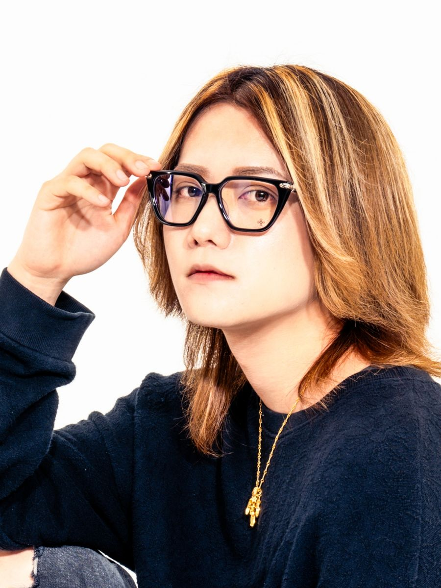
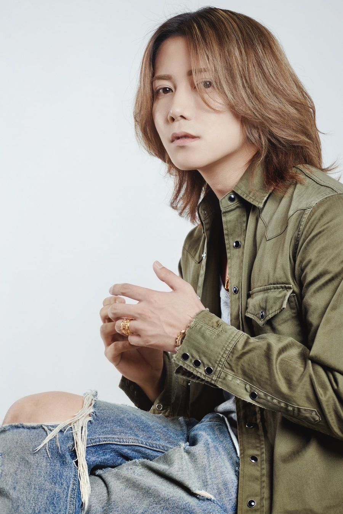

2019
何者でもないまま、東京へ
静岡で育って、大学をやめて東京に出てきた。決めていたのは「ここで変わる」ってことだけ。
歌舞伎町 ／ VALHALLA
Yu Asahina
初回の短い時間じゃ話しきれないから、
俺のことはここにまとめておく。
グループの YouTube「Mio Yashiro TV」に出た回。タップで再生。


04
スクロールすると、話が進みます。
2019
静岡で育って、大学をやめて東京に出てきた。決めていたのは「ここで変わる」ってことだけ。
歌舞伎町
最初は何もできなかった。目の前の一人とちゃんと話す。それだけを毎晩くり返した。
VALHALLA
Group Yggdrasill の VALHALLA で。グループの YouTube の接客バトルにも出た。上の動画に、そのまま残ってる。
バジひな
場地圭介と2人で TikTok を始めた。店の中だけじゃ見せられない顔を、ここで出してる。
これから
夜の仕事を土台にして、自分の手で新しいものをつくり始めてる。その途中も、ここに足していく。